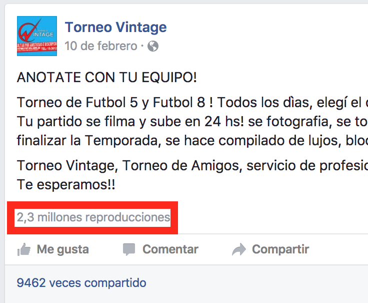
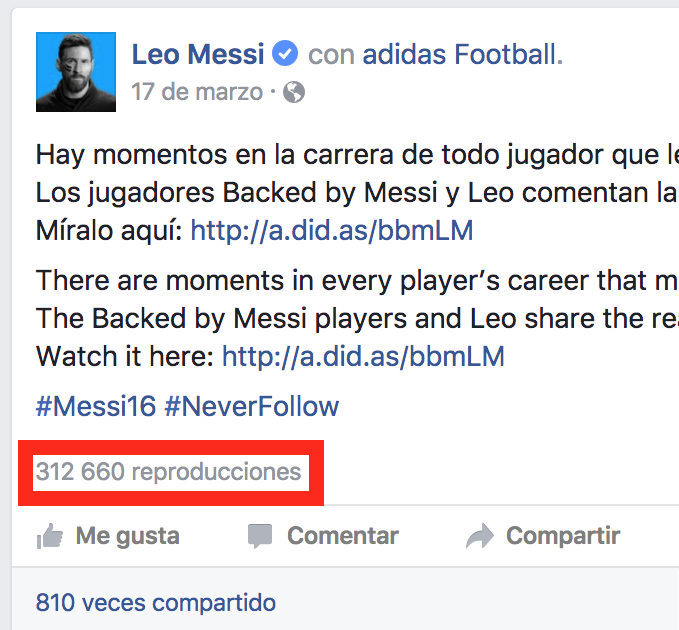

GoPro Goals
Motivación
1. Beneficio para el jugador
2. Viralización en redes sociales


3. Alcanzar los medios

¿Por qué una GoPro?
- Fácil de conseguir
- Tiene una API!
- Cherokee WebServer
Comandos
Unofficial GoPro Wifi API
#ENABLE STREAMING
curl -i "http://10.5.5.9/camera/PV?t=$GOPROPASS&p=%02"
vlc "http://10.5.5.9:8080/live/amba.m3u8"
# MODO FILMACION
curl "http://10.5.5.9/camera/CM?t=$GOPROPASS&p=%00"
# GRABAR (SHUTTER)
curl "http://10.5.5.9/bacpac/SH?t=$GOPROPASS&p=%01"
Comandos
# ARCHIVOS EN LA CAMARA (CHEROKEE)
open "http://10.5.5.9:8080/videos/DCIM/100GOPRO/"
# DESCARGAR ULTIMOS 5 SEGUNDOS
ffmpeg -sseof -5 -i "$VIDEO_URL" -c copy output.mp4
# BORRAR TODOS LOS ARCHIVOS DE LA CAMARA
curl "http://10.5.5.9/camera/DA?t=$GOPROPASS"